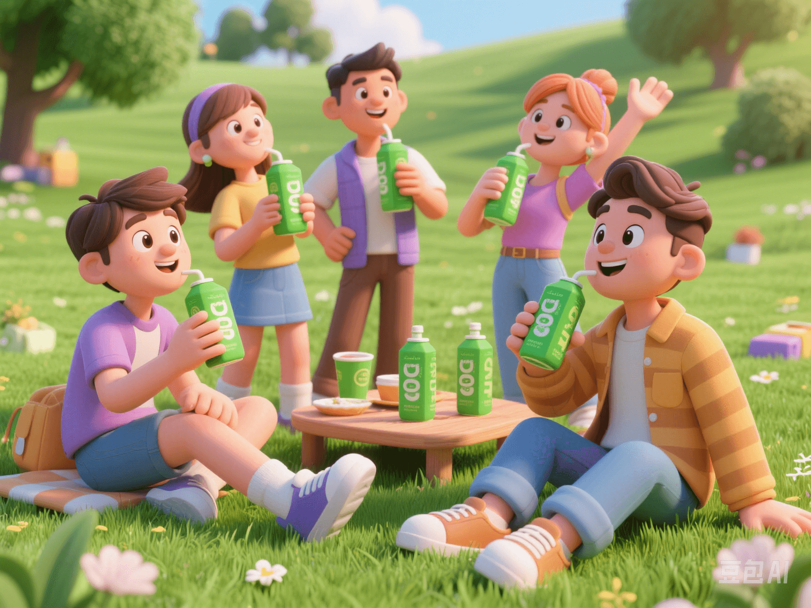

The Rise of "Clean Supplements": A Pure Nutrition Revolution for the Young 💪🌿
PeaceLove.Top Insights :2025-04-13
Introduction
As fitness and healthy lifestyles become trendy, a "supplement revolution" is quietly happening. More and more people, especially Generation Z consumers, are no longer satisfied with flashy marketing and complex - ingredient nutritional supplements. Instead, they are starting to pursue supplements that are "transparent, clean, and trustworthy". 💡 This trend is called "Clean Supplements". 🌱
🧬 What Are "Clean Supplements"?
Simply put, they are a type of nutritional products that focus on "minimal ingredients + no additives + transparent information". Representative brands such as Naked Nutrition, Klean Athlete, and Thorne Research clearly label:
- ✅ Zero flavorings
- ✅ Zero colorings
- ✅ Zero sweeteners
- ✅ Zero emulsifiers
- ✅ Pass third - party independent test reports 📋
- ✅ Sometimes even with minimalist - style packaging 🧂➡️💼
🔍 Why Are They Suddenly Popular?
1️⃣ Consumer Awakening: "I Want to Know Every Ingredient in What I Eat"
With the popularization of science on social media and the improvement of health literacy, consumers are increasingly concerned about the real effects, sources, and safety of nutritional products, setting off an "anti - food industrial additive trend". 🚫🧪
📈 The popularity of keywords on search platforms has soared: "transparent protein powder", "interpretation of supplement ingredients", "clean label".
2️⃣ The "Minimalist Supplements" Trend in the Fitness Circle 🏋️♀️
"Less is more" has become the mainstream concept. Many fitness bloggers have started to emphasize that there's no need to overly rely on a bunch of bottles and jars. Instead, use "clean and small - quantity" basic supplements to assist the diet.
3️⃣ Environmentalism & Animal - Friendliness 🌍🐄
Many clean supplements have also started to promote moral labels such as environmentally - friendly packaging, plant - based protein, and no animal testing, catering to the young group with an "environmentalist lifestyle".
🌟 A List of Representative Products (Examples):
| Brand | Product | Features |
|---|---|---|
| 🥛 Naked Nutrition | Naked Whey Protein Powder | Contains only one ingredient: 100% pasture - sourced whey, no sweeteners or spices |
| 🍃 Klean Athlete | Creatine | NSF - certified, suitable for athletes, zero redundant ingredients |
| 🧠 Thorne Research | Basic Nutrients | Medical - grade formula, publicly discloses the source of each trace element |
🤔 Who Do Consumers Trust More? Doctors or Bloggers?
Notably, many young people today don't blindly trust brands but rely on the experience feedback of real users on platforms such as Reddit, Zhihu, and Douyin. 📱 For example:
🗣️ "After taking this Clean Whey, my stomach has no burden, and my training is more stable."
🗣️ "I used to have diarrhea after drinking Brand X protein powder, but it got better immediately after switching to Naked."
⚠️ Tips: "Purer" Isn't Always Better for You
Although the concept of "clean supplements" is worthy of recognition, rational selection is still needed:
- ❗ Some additive - free protein powders have a bland taste and need to be mixed with milk or fruits.
- ❗ Minimal ingredients don't mean comprehensive nutrition. Certain specific groups (such as vegetarians and women) may still need to supplement trace nutrients.
- ❗ The prices are generally high, with obvious brand premiums. Pay attention to your budget. 🤑
✅ Conclusion: Return to the Essence of Nutrition 🥣
"Clean supplements" are not only a product trend but also a shift in values. Reject false promises, unknown ingredients, and excessive additives - young people are using their supplement - purchasing choices to express their pursuit of health, environmental protection, and a clear - cut lifestyle. ✨
📢 So the next time you open your protein powder jar, take a look at the ingredient list first and then ask yourself:
🧾 "Do I really need these ingredients?"
👀 "Can I understand this label?"
💬 True health starts with understanding every bite you eat.